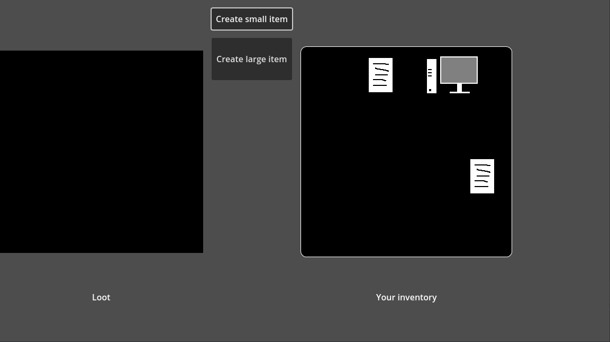
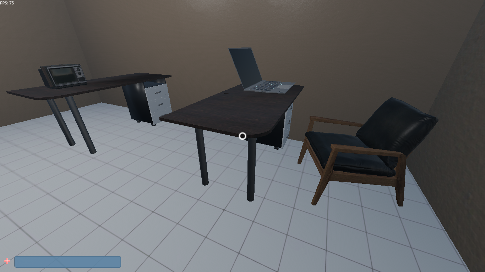

Team Game Platform by Yni project
It was a spiritual successor to SCP: Site Online, althrough it was no more an SCP game.
The main game is deprecated, due to a better alternative - Mirror platform! I found them a while ago, and they made better work, than my...
The new goals for the project is to make a good multiplayer starter kit for Godot developers!
Source code of main game (Github)Subprojects
|
Tile inventory system  Source code of tile inventory system (Github) |
Team multiplayer system (the core of the game)  Source code of team multiplayer system (Github) |
|
Elevator system (first implemented in SCP: Site Online v.0.8.1) Source code of elevator system (Github) |
NPC Transport system Source code of moving platform system (Github) |